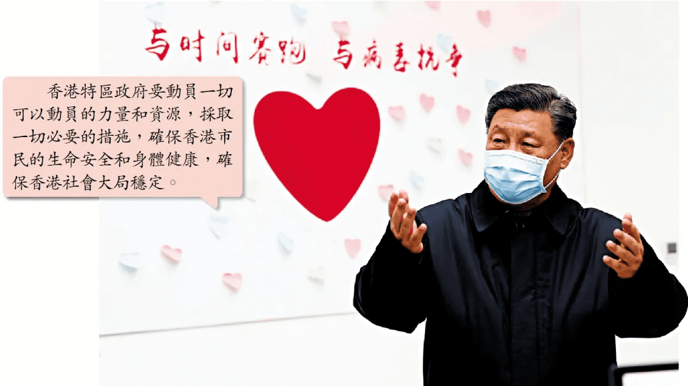
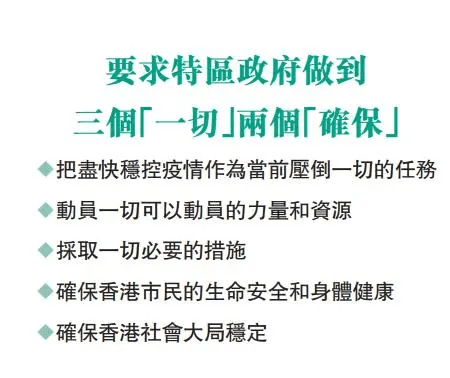
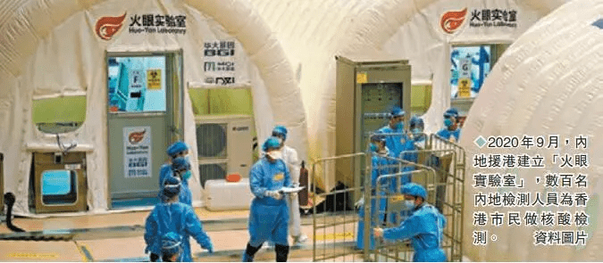

习近平指示：控疫压倒一切 中央全力援港
日期:2022-02-16 信息来源:大公文汇微信号
作者：香港中联办
香港第五波新冠肺炎疫情牵动着习近平总书记的心。近日习近平总书记就支援香港抗击第五波新冠肺炎疫情工作作出重要指示，并委托韩正副总理向林郑月娥行政长官转达对香港疫情的高度关注和对香港市民的亲切关怀，强调香港特区政府要切实负起主体责任，把尽快稳控疫情作为当前压倒一切的任务，动员一切可以动员的力量和资源，采取一切必要的措施，确保香港市民的生命安全和身体健康，确保香港社会大局稳定。中央各有关部门和地方要全力支持和帮助香港特区政府做好防疫抗疫工作。
中央有关部门和地方全力挺港抗疫
韩正副总理批示要求香港特区政府和各有关方面坚决贯彻落实习近平总书记的重要指示精神，并指示中央有关部门和广东省抓紧解决特区政府提出的提升香港核酸检测能力、支援快速抗原检测包等医疗物资、援建社区隔离和治疗设施、保障鲜活食品等生活必需品供应、选派防疫专家赴港指导等请求事项。
中央还决定，成立由国务院港澳办和国家卫健委牵头，中央有关部门和有关专家、广东省及特区政府三方共同组成的工作协调机制，加大有关工作统筹协调力度。
据悉，广东省委省政府近日也专门召开会议，就落实支援香港抗疫和保障对港物资供应等工作作出具体部署。